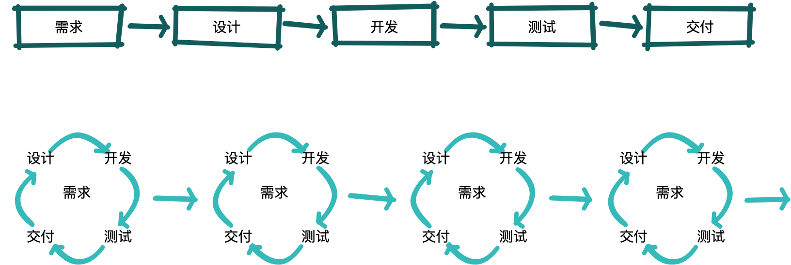
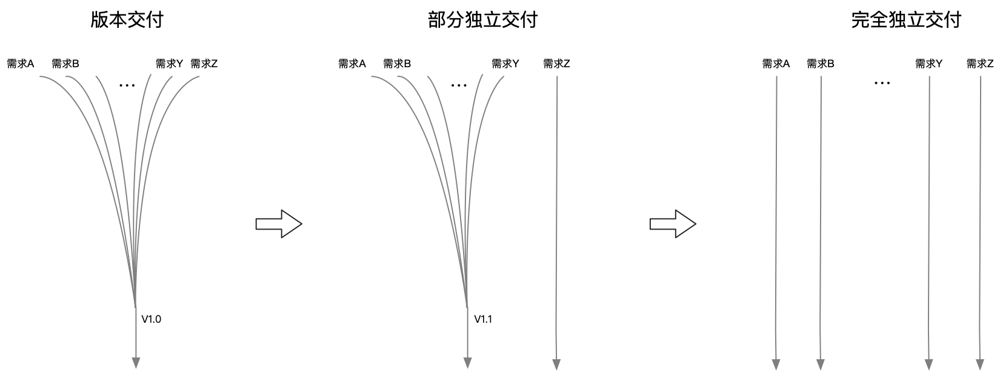
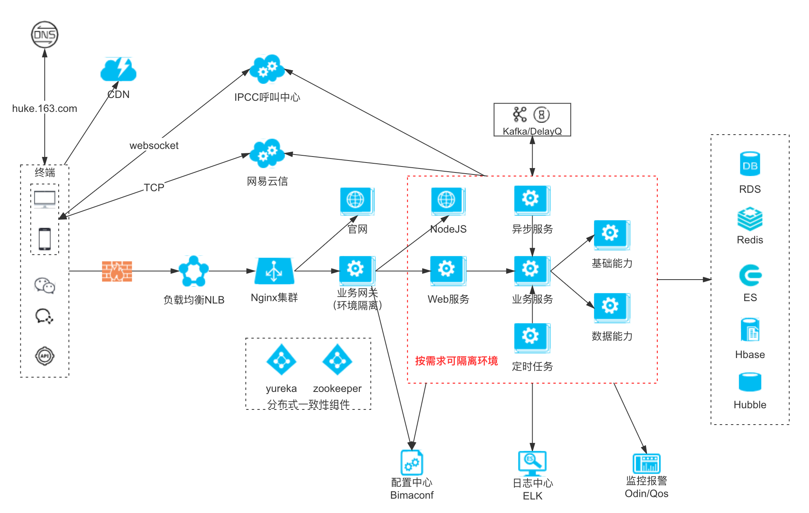
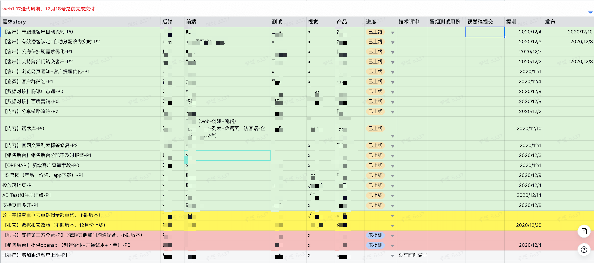
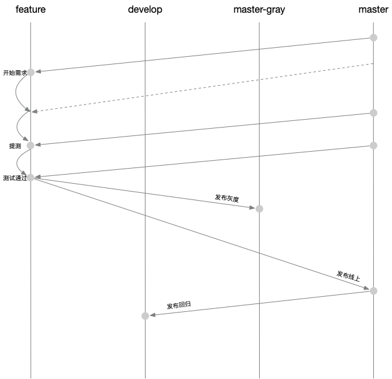
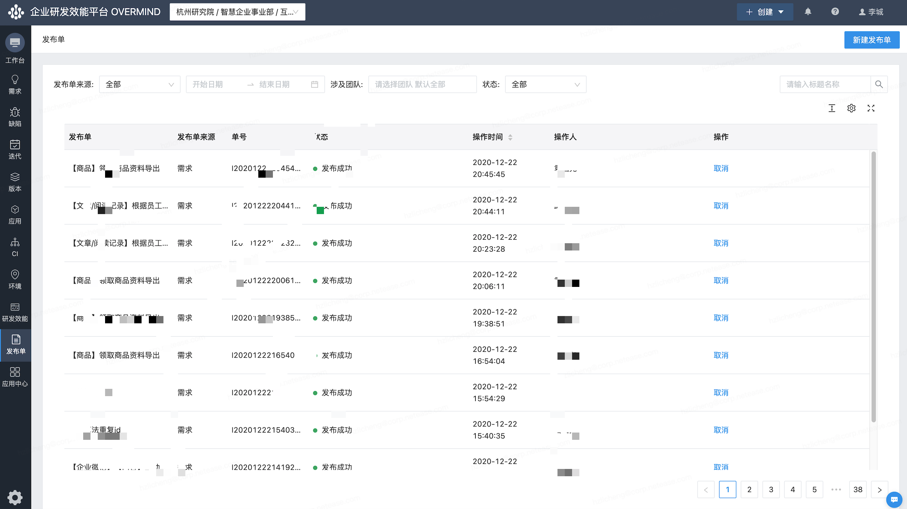
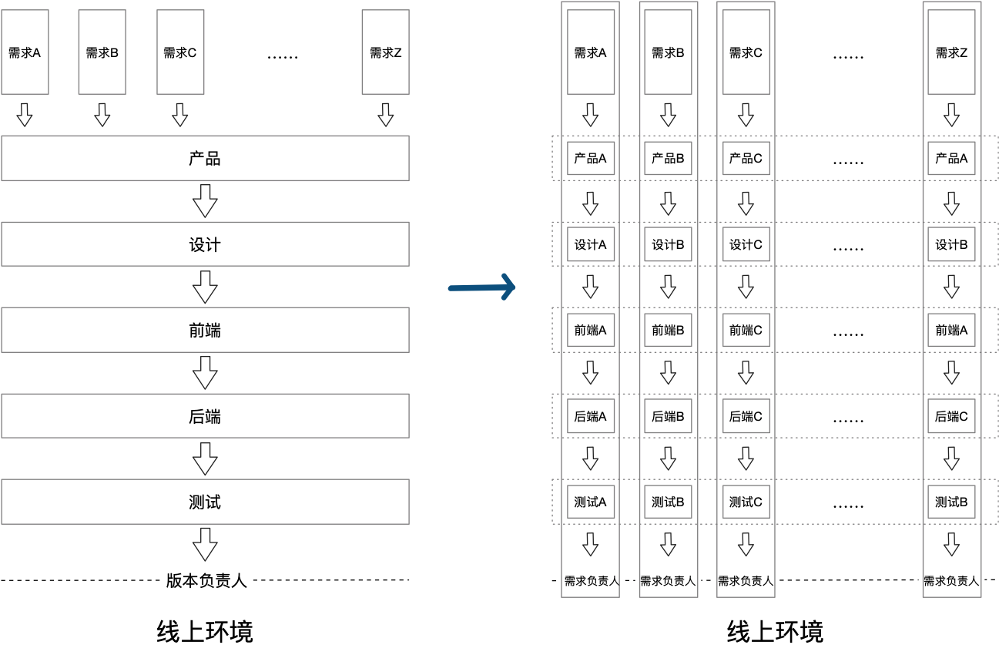
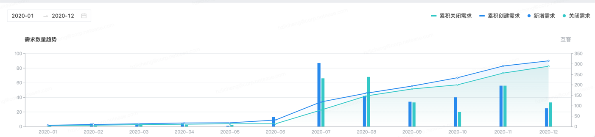
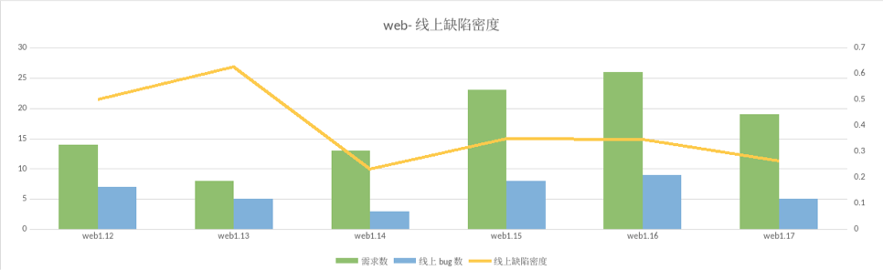
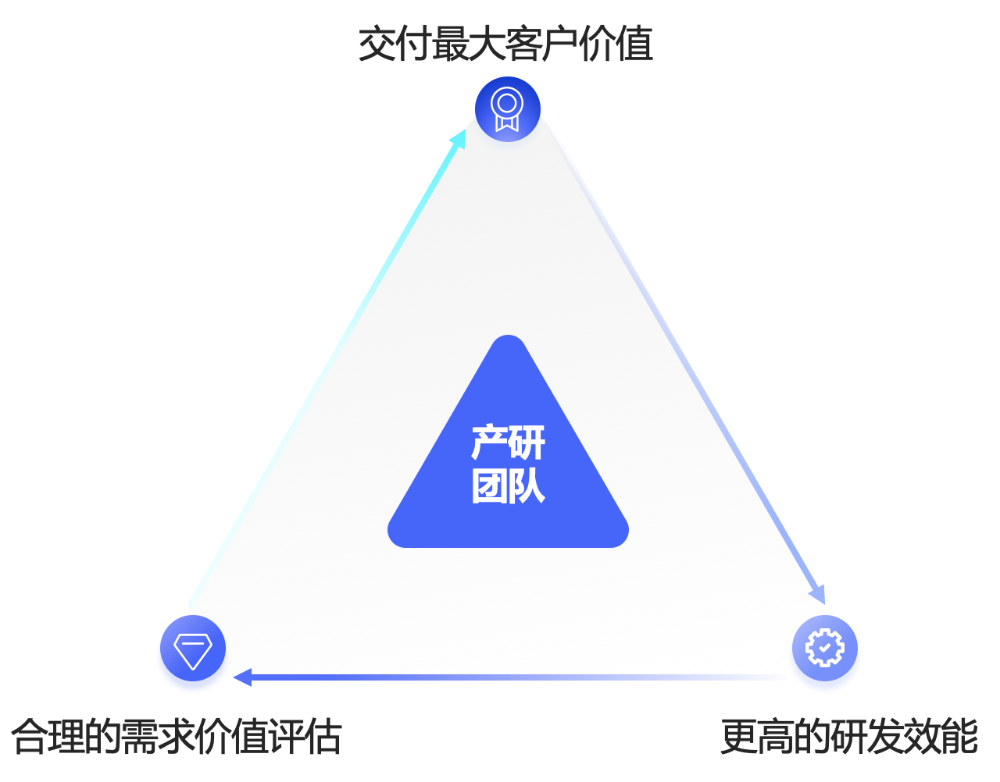

敏捷开发的一个重要目标是建立持续价值交付的能力。这种能力最终必须服务于业务的创新，促进业务的成功。
不知道大家最近有没有关注新闻，阿里开始拆中台了，张勇对目前阿里的中台并不满意，他直言，现在阿里的业务发展太慢，要把中台变薄，要变得敏捷和快速。很显然，敏捷对业务有着非常高的价值。
面临的问题
在过去的开发中，我们面临很多问题，如：
- 临时调整需求，牵一发而动全身。大家应该经常碰到离版本上线没几天了，产品说有个很重要的需求必须得加急上，不上不行。这种临时的需求调整，对版本的交付影响是很大的。
- 因为一个不重要的需求，延期整个版本的上线。上线当天，可能发现有一个不是很重要的点有问题，这个时候，整个版本都必须等这个问题解决，有时候直接回导致版本的延期，或者产生很多临时方案。
- 整个团队上线发布到凌晨。由于一个版本交付的内容太多了，准备工作很长，影响的范围也很大，通常会安排在晚上做发布，而发布过程中只要遇到一两个问题，通常发布就会搞到凌晨甚至后半夜。
- 有checklist依然不能避免遗漏。同样也是当版本越大，内容越多时，就越容易遗漏。
- 不同价值的需求，相互影响。一个版本中通常会包含各种优先级的需求，而不同优先级的需求同时开发交付，就一定会存在相互影响的问题。
- 需求相互耦合，上线交叉感染。这是指什么呢？一个版本上线出现问题时，由于上线的内容很多，定位问题就会变得更困难，不能确定是哪个需求的变更引起的问题。我们就出现过相互认为是对方的需求有问题，而浪费了很长时间。
- 产研团队交付效率上不去。所有问题最后都导致了交付效率上不去，交付质量上不去。
相信大家也有碰到过和我们类似的这些问题。这其中有很多问题，都是可以通过敏捷交付来解决或减轻。
敏捷VS瀑布
那什么是敏捷呢？关于敏捷模式和瀑布模式的理论知识，相信大家都已经有些了解，这里就不细说其中的理论知识了。我们把敏捷和瀑布的区别简单理解为，瀑布是按版本交付的，敏捷是按需求交付的。
瀑布模式中版本的需求、时间、资源是确定的，三个因素相互制约。最大的优势在于可预测性，流程简单，有固定的时间点。但同时带来的问题是缺乏灵活性，进入版本后，调整需求或时间的代价会非常大，并且版本越大时带来的风险和不确定性越大。大多数研发团队采用的都是瀑布模型。敏捷模式中需求变成了变量，在固定时间和资源的情况下，灵活调整需求，从而获得最大交付加值。
如图所示，瀑布模式中整个团队按步骤一步步执行，最终全量交付。而在敏捷模式中，在固定的时间内（迭代周期）将一个版本拆分为一个个可以独立交付上线的需求，优先交付高优先级（高价值）的需求，并由一个个独立的小团队负责交付。最大的优势是非常灵活，可以根据实际情况随时调整需求，同时由于交付单元限定在最小范围内，使得上线发布的影响范围最小，风险可控，也可以提高交付质量。目标是在尽可能短的时间内交付尽可能高的价值。

先试点再推广
进行敏捷交付的转型前，我们进行了很多调研和沟通工作，学习公司内部外部已经实现敏捷交付的团队的经验。然后制定了初步的方案，并在小范围内进行试点，试点过程中不断调整方案，调试工具，当试点方案执行顺利以后再推广到整个团队。互客刚开始的时候，就是选择其中一些比较小的简单的需求来进行试点的。在转型的过程中，我们总结出四个重要的要素，分别是：环境、流程、工具、人。

需要准备什么
系统架构
首先想要进行敏捷交付，需要有能适应敏捷模型的研发环境，包括系统的合理拆分、边界清晰的业务、可以进行独立开发测试的环境隔离能力。要有平滑发布的能力，任何时间发布任何服务不应该因为发布动作本身引起问题。还需要有完善的监控可以实时反馈系统的异常，特别在实践初期总会有意外情况，研发应该能第一时间获知系统发生异常。如果研发环境本身还是非常耦合，牵一发而动全身的情况，需求的负责人都不知道影响范围在哪里。那就很去难实现敏捷的交付方式。如果没有准确的异常监控能力，会有很大的风险。因此合理的架构是敏捷的基础

流程规范
然后是流程规范。从需求拆分、时间规划、代码分支管理、技术方案评审、测试报告、发布审核、自动化回归。团队中的每个人必须严格按照流程进行，因为越灵活的方案，背后意味着更多的不可控。所以在转型初期，严格执行流程是非常必要的。
敏捷交付的前提是需求必须是合理拆分的，而我们对合理的定义就是，可以独立交付上线的称为一个需求。如果两个需求之间是相互耦合的，少了其中一个，另一个需求都不能独立交付。那么这样的需求就是不合理的，应该合并为一个需求。
这个是互客上一个版本的需求列表，以及分工，时间规划等等。可以看到大部分是正常需求，黄色部分是比较大的不跟版本的需求，红色和划线的是延期或取消的需求。需求的交付变成了一个灵活的过程。

这个是我们的需求分支管理，非常简单，大家都能看懂。其中比较重要的是一定要经常从master合最新代码到自己的feature分支。

实施工具
工具是流程的承载，没有合适的工具是很难把流程执行起来的。网易内部的ovemrind效能平台可以很好的支持我们的流程，配合飞书文档，TC平台和gotest平台，基本上可以比较好的支持整个流程了。下面的截图是某一天下午的发布单，可以看到一下午就有多次发布。

团队组织
最后我们需要根据敏捷交付的逻辑去适当的调整团队的组织形式，原先的团队组织形式，边界在于职能，所有的需求在不同的职能间流转，最后由版本负责人负责交付上线。这种模式下，各职能团队的人只能接触到自己工作范围内的东西，所以对需求的理解程度高低不等，当产生需求变更时，也更容易产生抵触情绪，当出现调整或返工时也会付出很大的代价。
右边是为了适应敏捷交付调整的组织形式，每个需求都会有一个临时的虚拟小组来负责，需求只在这个小组内部流转，最后由需求负责人交付上线。在这种模式下，团队组织的边界不再是职能，而在于需求。虚拟小组的成员需要关心一个需求的全生命周期，能更好的理解需求。当有需求变更时，影响范围也相对小得多。并且通常会在方案设计过程中研发和产品一起讨论调整需求。
不管是环境、流程还是工具，最后一定都是需要人去执行的，也就是团队中的每个成员。因此团队成员的思维转变是敏捷转型中的重点，在工作进行前，首先应该在团队内进行足够的沟通，让每个人理解转型的价值和意义，让每个人都愿意为之努力。当团队达成一致的目标时，离成功就已经不远了。

得到了什么
这是互客过去几个版本的需求吞吐量，缺陷密度（七八月份由于需求统计问题，需要除以二），不管质量还是吞吐量都是有比较明显的提升的。


当然，我觉得更重要的是，我们得到了持续快速的交付价值的能力，得到了沟通顺畅，相互信任的团队。另外从我个人做需求感觉来说，在敏捷模式下，我对需求的理解会更好，工作会变的更聚焦，会自然而然的关注需求从评审到上线的整个过程，会及时的关注自己的需求的情况等等。比如今天就有一单，是因为我们上了一个数据看板的需求，客户的下单直观的反馈到了这个需求的负责团队，这可以让产研统一目标，相互促进，产生良性循环。
经验总结
在网易互客实践敏捷交付的过程中我们踩了许多坑，这里列举一些比较典型的例子，希望可以帮助大家少走一点点弯路。
- 不要过分追求模式，我们的目标是质量和效率，而不是模式
- 沟通，充分的沟通，要达成理解一致
- 转型初期流程要严格执行
- 需求一定要有负责人
- 需求交付尽量不要搭车，容易搭到黑车
- 对质量负责的不是QA，是每个需求的小组
- 系统实时反馈很重要
最后期望所有的研发团队都能让有限的资源产生最大的价值。
未来规划
